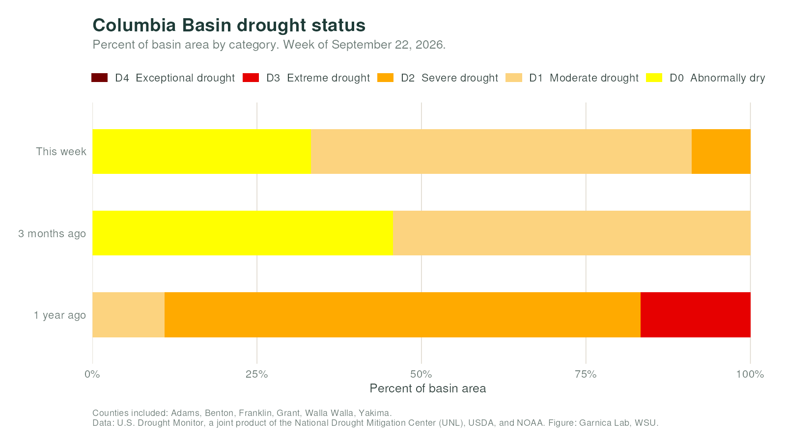
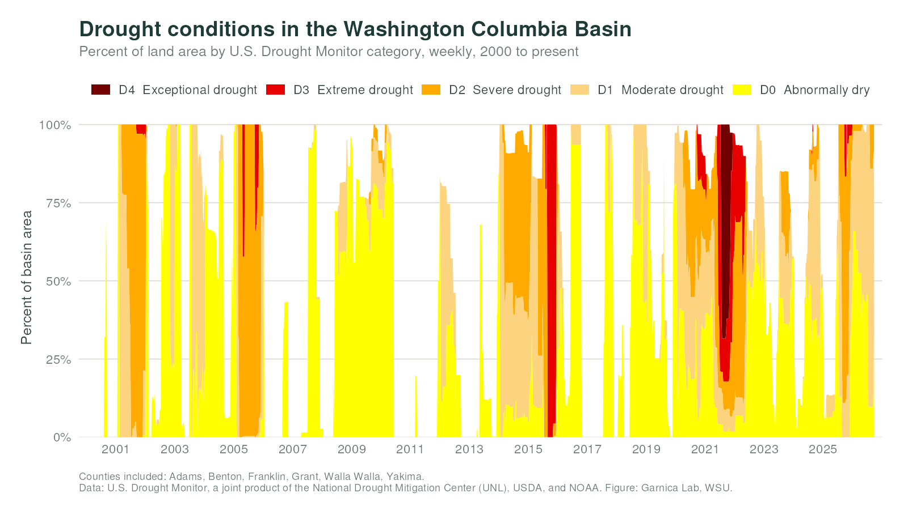
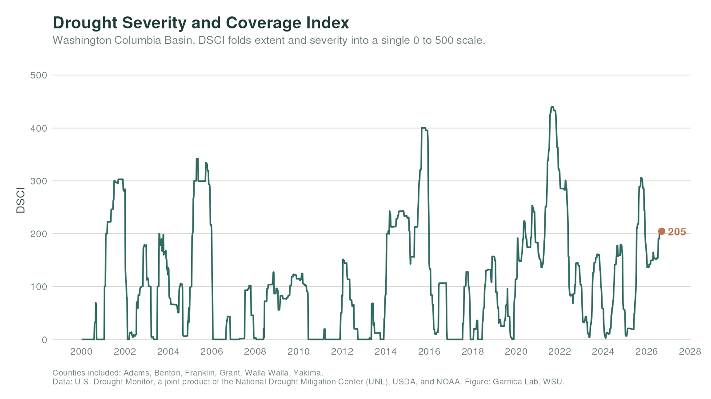

Current status

The longer record

Severity and coverage

Method
Figures aggregate U.S. Drought Monitor county records for Adams, Benton, Franklin, Grant, Walla Walla, and Yakima counties, which grow most of Washington's potatoes.